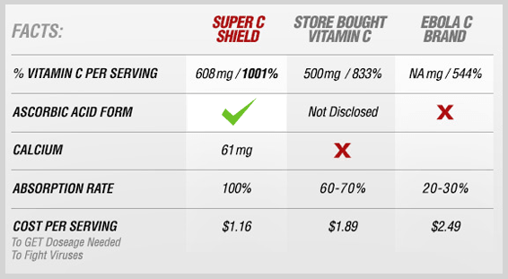

Science Discovers New Ways
vitamin C help The Immune system
Before today, you may or may not have heard that Vitamin-C is clinically proven to help build your immune system and help fight the spread of deadly viruses, but taken incorrectly or in the wrong form can prove to useless!!
The type of Vitamin-C you choose to buy AND the amount you take daily could literally be a LIFE or Death decision*
Massive doses of VITAMIN C are reported to have helped against every virus it has been pitched against*
CDC Says This Years Vacination is NOT EFFECTIVE For Current Circulating Viruses?
“So far this season, influenza A -- H3N2 viruses -- have been detected most frequently, and in almost all states” CDC Director Thomas Frieden, MD, MPH
"Laboratory analysis of circulating flu viruses this season indicates that most of the H3N2 viruses are antigenically or genetically different than the H3N2 vaccine virus. This means it’s possible this season’s vaccine may not work as well against those viruses, but it should work well against the minority of circulating H3N2 viruses"*Buying The Wrong Form Of Vitamin C Could Be A Life Or Death Decision!!
WHY YOU SHOULD WORRY ABOUT THE SPREAD OF THE FLU! As of late December, all national key flu indicators are elevated!! Half of of the country is experiencing high flu activity
(CNN) Shannon Zwanziger seemed perfectly healthy, then one day, she came home with the flu. She died a week later.
I have been taking Super C Shield and my family and I have managed to avoid the spread of the FLU!! Even my kids who are in grade school and middle school have not missed one day!!!
Thanks Super C Shield!!!
Starr Z
Experts Believe There WIll Be A Run On Vitamin C Supplies!!
Don't Get Caught Without A Supply For Your Entire Family!!
The intake for an otherwise healthy person to have a reasonable chance of avoiding a common cold is in the region of 8-10 grams (8,000-10,000 mg) a day. This is about ten times what corporate medicine has tested in their trials on vitamin C and the common cold
Ten grams (10,000 mg) is the minimum pharmacological intake; it may help if you have a slight sore throat but more(much more) may be needed
To get rid of a common cold, you may need anything form 20 to 60 grams (60,000 mg) a day
With influenza the need might be for 100 grams (100,000 mg) a day
According to WEBMD: The Benefits of Vitamin C. What can vitamin C do for your health?
1. Stress. "A recent meta-analysis showed vitamin C was beneficial to individuals whose immune system was weakened due to stress -- a condition which is very common in our society," says Moyad. And, he adds, "because vitamin C is one of the nutrients sensitive to stress, and [is] the first nutrient to be depleted in alcoholics, smokers, and obese individuals, it makes it an ideal marker for overall health."2. Colds. When it comes to the common cold, vitamin C may not be a cure. But some studies show that it may help prevent more serious complications. "There is good evidence taking vitamin C for colds and flu can reduce the risk of developing further complications, such as pneumonia and lung infections," says Moyad.
3. Stroke. Although research has been conflicting, one study in the American Journal of Clinical Nutrition found that those with the highest concentrations of vitamin C in their blood were associated with 42% lower stroke risk than those with the lowest concentrations. The reasons for this are not completely clear. But what is clear is that people who eat plenty of fruits and vegetables have higher blood levels of vitamin C.
4. Skin Aging. Vitamin C affects cells on the inside and outside of the body. A study published in the American Journal of Clinical Nutrition examined links between nutrient intakes and skin aging in 4,025 women aged 40-74. It found that higher vitamin C intakes were associated with a lower likelihood of a wrinkled appearance, dryness of the skin, and a better skin-aging appearance.
Other studies have suggested that vitamin C may also:
- Improve macular degeneration*
- Reduce inflammation*
- Reduce the risk of cancer and cardiovascular disease*
Enzyme Labs teamed up with scientists who designed this formula to help deliver the right amounts of Vitamin-C in the most absorbable form
Take too much of a high dose of vitamin C it decreases the life of the Vitamin C in your body!!But if you take the right form of Vitamin C your body will absorb it much quicker increasing the life of the Vitamin C in your body!! Your body is even absorbing Vitamin C in your gut storing it to use as a reserve.
This will help keep your body in a reduced (Anti-Oxidant State) using high doses of the right form of Vitamin C.
The effectiveness of vitamin C is not directly proportional to the dose, but how much your body absorbs and stores. There is a threshold above which vitamin C becomes highly effective. Below this level, the effect is small; above it, the effect is dramatic.